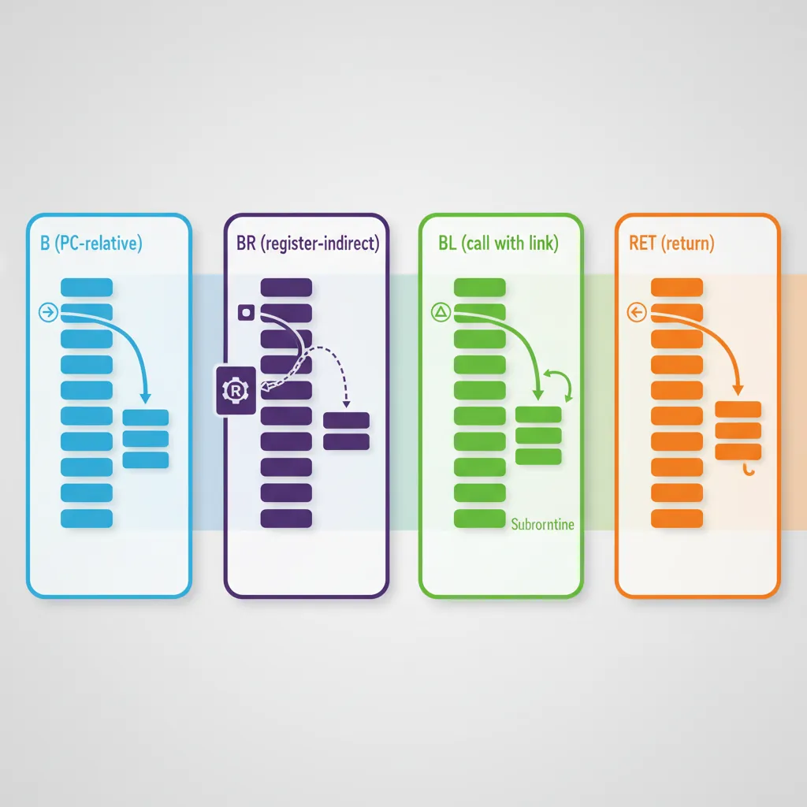
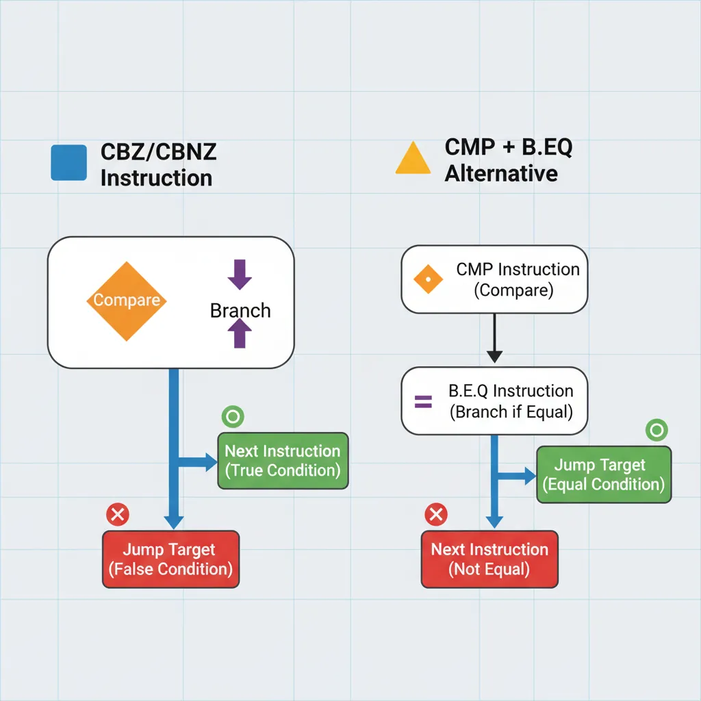
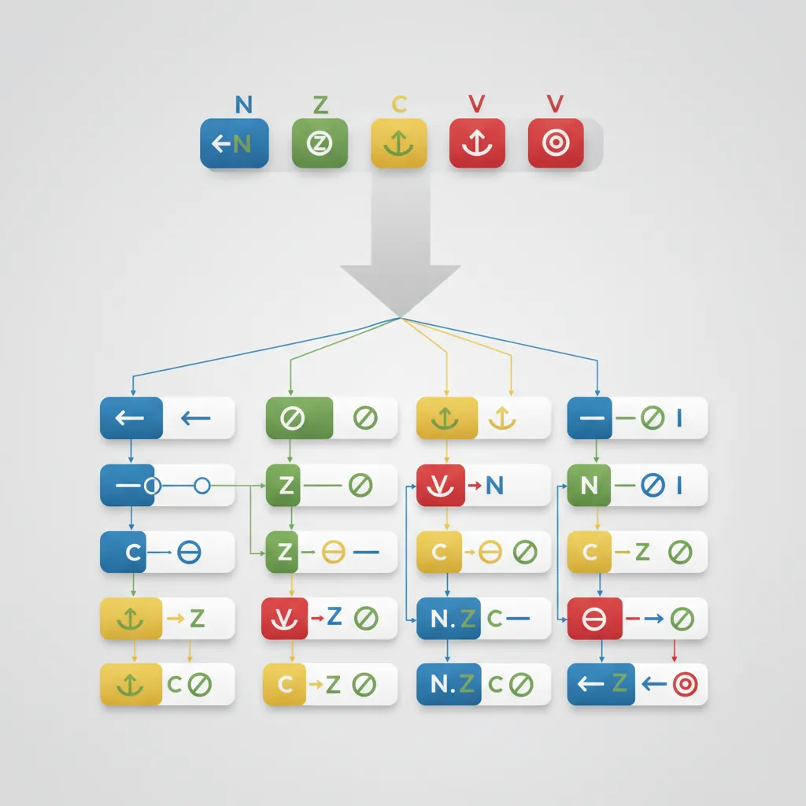
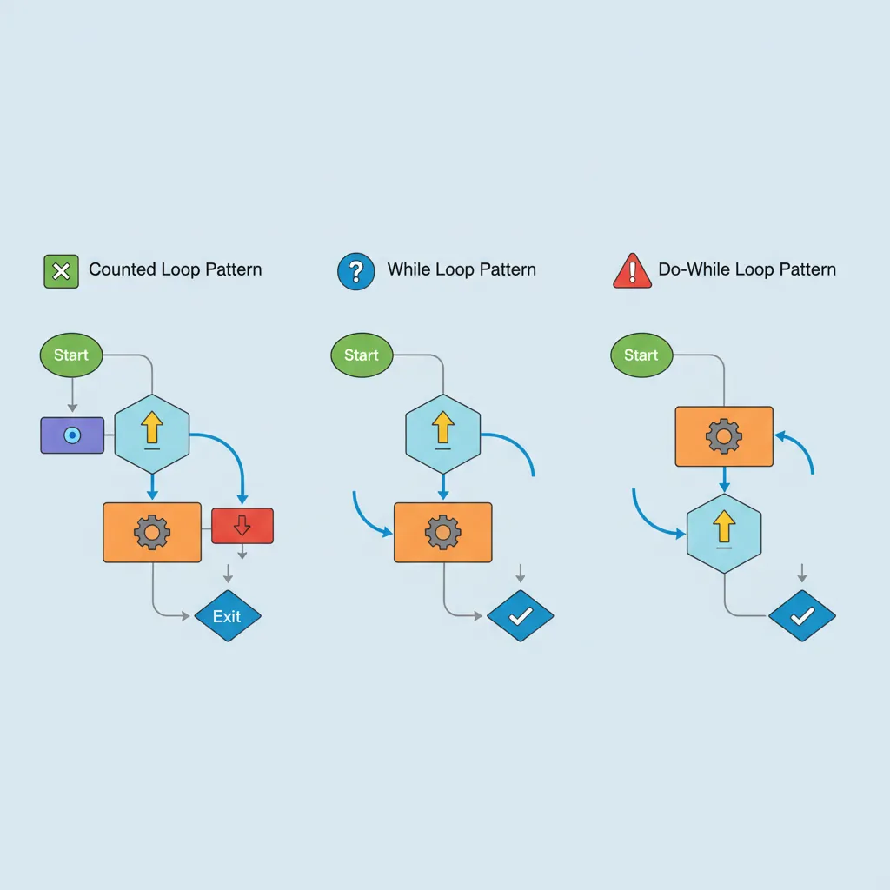
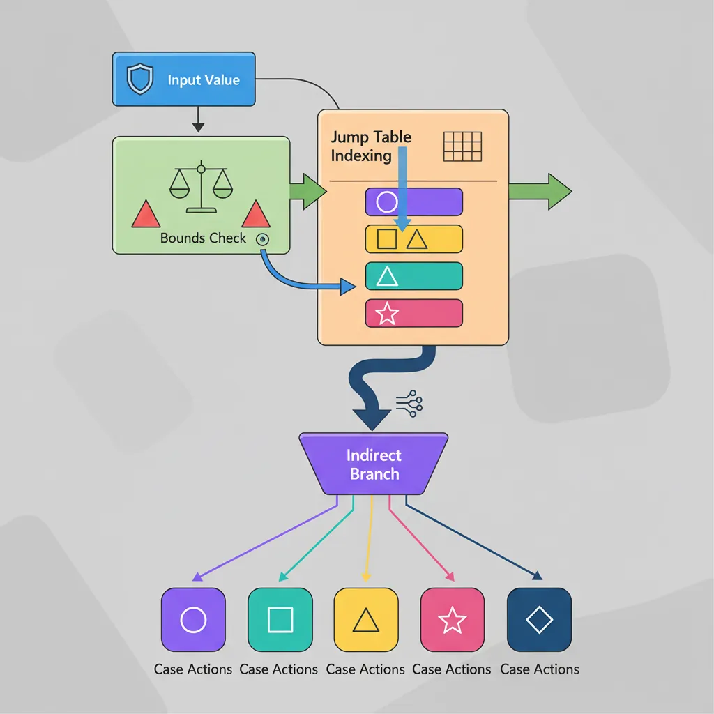

Introduction
ARM Assembly Mastery
Architecture History & Core Concepts
ARMv1→v9, RISC philosophy, profilesARM32 Instruction Set Fundamentals
ARM vs Thumb, registers, CPSR, barrel shifterAArch64 Registers, Addressing & Data Movement
X/W regs, addressing modes, load/store pairsArithmetic, Logic & Bit Manipulation
ADD/SUB, bitfield extract/insert, CLZBranching, Loops & Conditional Execution
Branch types, link register, jump tablesStack, Subroutines & AAPCS
Calling conventions, prologue/epilogueMemory Model, Caches & Barriers
Weak ordering, DMB/DSB/ISB, TLBNEON & Advanced SIMD
Vector ops, intrinsics, media processingSVE & SVE2 Scalable Vector Extensions
Predicate regs, gather/scatter, HPC/MLFloating-Point & VFP Instructions
IEEE-754, scalar FP, rounding modesException Levels, Interrupts & Vector Tables
EL0–EL3, GIC, fault debuggingMMU, Page Tables & Virtual Memory
Stage-1 translation, permissions, huge pagesTrustZone & ARM Security Extensions
Secure monitor, world switching, TF-ACortex-M Assembly & Bare-Metal Embedded
NVIC, SysTick, linker scripts, low-powerCortex-A System Programming & Boot
EL3→EL1 transitions, MMU setup, PSCIApple Silicon & macOS ABI
ARM64e PAC, Mach-O, dyld, perf countersInline Assembly, GCC/Clang & C Interop
Constraints, clobbers, compiler interactionPerformance Profiling & Micro-Optimization
Pipeline hazards, PMU, benchmarkingReverse Engineering & ARM Binary Analysis
ELF, disassembly, CFR, iOS/Android quirksBuilding a Bare-Metal OS Kernel
Bootloader, UART, scheduler, context switchARM Microarchitecture Deep Dive
OOO pipelines, reorder buffers, branch predictVirtualization Extensions
EL2 hypervisor, stage-2 translation, KVMDebugging & Tooling Ecosystem
GDB, OpenOCD/JTAG, ETM/ITM, QEMULinkers, Loaders & Binary Format Internals
ELF deep dive, relocations, PIC, crt0Cross-Compilation & Build Systems
GCC/Clang toolchains, CMake, firmware genARM in Real Systems
Android, FreeRTOS/Zephyr, U-Boot, TF-ASecurity Research & Exploitation
ASLR, PAC attacks, ROP/JOP, kernel exploitEmerging ARMv9 & Future Directions
MTE, SME, confidential compute, AI accelBranch Instruction Overview
If data-processing instructions are the "muscles" of a program, branches are its nervous system — they make decisions, create loops, call functions, and return results. AArch64 provides three clean families of branch instructions:
| Family | Instructions | Purpose | Condition Source |
|---|---|---|---|
| Unconditional | B, BR, BL, BLR, RET | Jumps, function calls, returns | None — always taken |
| Compare & Branch | CBZ, CBNZ, TBZ, TBNZ | Test a register value directly | Register value (no flags needed) |
| Conditional | B.cond, CSEL, CSET, CSINC, CSINV | Branch or select based on NZCV | NZCV flags (from prior ADDS/CMP/etc.) |
PC-Relative Range Limits
Every branch instruction encodes its target as a PC-relative offset within the 32-bit instruction word. Different instructions sacrifice different amounts of encoding space for the offset, giving them different ranges:
| Instruction | Offset Bits | Range | Typical Context |
|---|---|---|---|
B / BL | 26 bits × 4 | ±128 MB | Function calls, long jumps — covers most binaries |
B.cond, CBZ/CBNZ | 19 bits × 4 | ±1 MB | Conditional branches, loop tests, null checks |
TBZ/TBNZ | 14 bits × 4 | ±32 KB | Bit tests — usually close to the test site |
BR/BLR/RET | Register (64-bit) | Full 64-bit address space | Indirect calls, function pointers, returns |
Unconditional Branches
B & BR — Jump
B (Branch) is the simplest control-flow instruction — an unconditional PC-relative jump. BR (Branch Register) is its indirect sibling, jumping to the absolute 64-bit address held in a register:

// B — PC-relative unconditional jump
B .target // Jump to label (PC + signed offset)
B _start // Jump to symbol (linker resolves)
// BR — Register-indirect jump (no link)
BR x16 // Jump to address in x16
// Does NOT save return address
// Used for: computed gotos, tail calls,
// jump tables, longjmpB is for "I know where I'm going at compile time" — the target is a label or symbol resolved by the assembler/linker. BR is for "the destination is computed at runtime" — function pointers, jump tables, or tail-call optimisations where the target varies.
BL & BLR — Call (Link)
BL (Branch with Link) and BLR (Branch with Link to Register) are the function call instructions. Before jumping, they save PC+4 (the address of the next instruction) into X30 (the Link Register), creating a breadcrumb trail for the callee to return to:
// Direct function call (BL)
BL printf // X30 = PC+4, then jump to printf
// printf will RET back to here
// Indirect function call (BLR)
LDR x8, [x0, #callback] // Load function pointer from struct
BLR x8 // X30 = PC+4, then call via x8
// Multiple calls in sequence
BL init_hardware // X30 = addr_of_next_instr
BL config_clocks // X30 updated again (overwritten!)
BL main // Each BL overwrites X30BL/BLR overwrites X30. If a function calls another function (non-leaf), it must save X30 to the stack in its prologue and restore it before RET. Forgetting this is the #1 cause of infinite loops and crashes in hand-written assembly — the function returns to itself instead of its caller.
RET — Return
RET branches to the address in X30 (by default), returning control to the caller. Critical details:
- RET is NOT a stack pop: It only jumps to X30. It does NOT pop the return address from the stack (unlike x86-64's
RET). The callee must restore X30 from the stack manually if it saved it. - Optional register:
RET Xnreturns to the address in Xn instead of X30 — rarely used but available for coroutines or custom dispatch. - Branch prediction hint: The processor treats RET differently from
BR x30— RET uses the return address stack predictor, which is faster. Always use RET for function returns, never BR X30.
// Leaf function (no calls → no need to save X30)
ADD x0, x0, x1 // Compute result
RET // Return to caller via X30
// Non-leaf function (calls other functions → must save X30)
STP x29, x30, [sp, #-16]! // Save FP and LR
MOV x29, sp // Set frame pointer
BL helper // Call helper (overwrites X30)
LDP x29, x30, [sp], #16 // Restore FP and LR
RET // Return to original callerCompare & Branch
CBZ/CBNZ — Compare Zero
CBZ (Compare and Branch on Zero) and CBNZ (Compare and Branch on Nonzero) test a register directly without setting or reading NZCV flags. They combine a comparison with zero and a branch into a single instruction — saving the separate CMP that x86-64 requires:

// Null pointer check (most common use)
CBZ x0, .return_null // if (ptr == NULL) goto return_null
// ptr is guaranteed non-null here
// Loop termination (count down to zero)
SUB x1, x1, #1 // Decrement (no S suffix = no flags)
CBNZ x1, .loop_body // if (count != 0) continue
// Linked list traversal
.traverse:
LDR x0, [x0, #next] // Follow next pointer
CBZ x0, .end_of_list // NULL? End of list
// Process node...
B .traverse
// 32-bit variants (test W registers)
CBZ w0, .is_zero_32 // Test lower 32 bits only
CBNZ w5, .nonzero_32CMP x0, #0 then B.EQ label. CBZ halves this to one instruction — a significant code-size and dispatch-bandwidth saving across millions of branches per second.
TBZ/TBNZ — Test Bit
TBZ (Test Bit and Branch if Zero) and TBNZ (Test Bit and Branch if Nonzero) test a single specific bit within a register and branch accordingly. Like CBZ/CBNZ, they don't touch the NZCV flags:
// Test bit 31 (sign bit of a 32-bit value in a 64-bit register)
TBNZ x0, #31, .is_negative // Branch if signed negative
// Test bit 0 (odd/even check)
TBZ x0, #0, .is_even // Branch if bit 0 is clear (even)
// Check a specific permission flag
TBNZ x_flags, #PERM_WRITE, .has_write // Branch if write permitted
// Hardware status register bit test
MRS x0, DAIF // Read interrupt mask register
TBNZ x0, #7, .irq_masked // Branch if IRQ bit (bit 7) is masked
// Bit-scan loop (find first set bit)
.scan:
TBZ x0, #0, .next_bit // Test LSB
// Bit 0 is set — process it
B .done
.next_bit:
LSR x0, x0, #1 // Shift right
ADD x1, x1, #1 // Increment bit position
CBNZ x0, .scan // Continue if bits remainCBZ/TBZ vs CMP+B.cond — Fusion and Efficiency
On high-performance AArch64 cores (Cortex-A76+, Apple M-series, Neoverse V1), the branch predictor handles CBZ/CBNZ/TBZ/TBNZ as single micro-ops, while CMP + B.cond may or may not be fused depending on the core's macro-fusion rules. Even when fused, CBZ saves one instruction's worth of fetch bandwidth. In tight loops, this translates to measurable throughput improvements — Apple's M1 can execute up to 8 instructions per cycle, so saving one instruction per iteration on a 4-instruction loop body is a 20% improvement.
Conditional Branches
NZCV Conditions Reference
AArch64 uses four condition flags — N (Negative), Z (Zero), C (Carry), V (Overflow) — collectively called NZCV. These flags are set by flag-setting instructions (ADDS, SUBS, ANDS, CMP, TST, etc.) and read by conditional branches and CSEL/CSET. There are 15 named conditions (14 meaningful + AL/always):

Condition Code Quick Reference
| Code | Suffix | Meaning | Flags Test | Signed/Unsigned |
|---|---|---|---|---|
| 0000 | EQ | Equal | Z = 1 | Both |
| 0001 | NE | Not Equal | Z = 0 | Both |
| 0010 | CS / HS | Carry Set / Higher or Same | C = 1 | Unsigned ≥ |
| 0011 | CC / LO | Carry Clear / Lower | C = 0 | Unsigned < |
| 0100 | MI | Minus (Negative) | N = 1 | Signed result negative |
| 0101 | PL | Plus (Positive or Zero) | N = 0 | Signed result ≥ 0 |
| 0110 | VS | Overflow Set | V = 1 | Signed overflow occurred |
| 0111 | VC | Overflow Clear | V = 0 | No signed overflow |
| 1000 | HI | Higher | C = 1 AND Z = 0 | Unsigned > |
| 1001 | LS | Lower or Same | C = 0 OR Z = 1 | Unsigned ≤ |
| 1010 | GE | Greater or Equal | N = V | Signed ≥ |
| 1011 | LT | Less Than | N ≠ V | Signed < |
| 1100 | GT | Greater Than | Z = 0 AND N = V | Signed > |
| 1101 | LE | Less or Equal | Z = 1 OR N ≠ V | Signed ≤ |
| 1110 | AL | Always | (unconditional) | N/A |
B.GT/B.LT (signed) when comparing unsigned values, or B.HI/B.LO (unsigned) with signed values. Example: comparing address 0xFFFF...0 with 0x1 — unsigned, the first is higher; signed, it's -16 (less). Always match the comparison type to your data type: unsigned → HS/LO/HI/LS, signed → GE/LT/GT/LE.
B.cond — Conditional Branch
Append any condition code to B. to create a conditional branch. The condition is evaluated against NZCV flags set by the most recent flag-setting instruction. The two most common flag-setters are CMP (subtract, discard result) and TST (AND, discard result):
// If-else pattern: if (x0 > x1) { ... } else { ... }
CMP x0, x1 // Set NZCV based on x0 - x1
B.GT .greater // Signed: x0 > x1?
// else path here
B .done
.greater:
// greater-than path
.done:
// Unsigned comparison
CMP x0, x1
B.HI .x0_higher // Unsigned: x0 > x1?
// Chained comparisons (if-elseif-else)
CMP x0, #0
B.LT .negative // x0 < 0?
B.EQ .zero // x0 == 0?
// x0 > 0 (fall-through)
// CMN — Compare Negative (adds instead of subtracts)
CMN x0, #1 // Equivalent to CMP x0, #-1
B.EQ .is_minus_one // x0 == -1?
// TST-based branching (test specific bits)
TST x0, #0x3 // Test alignment (low 2 bits)
B.NE .not_aligned // Branch if any low bits setCSEL, CSET, CSINC, CSINV
The CSEL family provides branchless conditional data operations — they select between two values based on a condition code without branching. This eliminates branch misprediction penalties for simple conditionals:
// CSEL — Conditional Select
CMP x0, x1
CSEL x2, x0, x1, LT // x2 = (x0 < x1) ? x0 : x1 (min)
CSEL x3, x1, x0, LT // x3 = (x0 < x1) ? x1 : x0 (max)
// CSET — Conditional Set (boolean result)
CMP x0, #0
CSET x1, GT // x1 = (x0 > 0) ? 1 : 0
// CSINC — Conditional Select Increment
CMP x0, x1
CSINC x2, x3, x4, EQ // x2 = (x0 == x1) ? x3 : x4+1
// CSINV — Conditional Select Invert
CMP x0, #0
CSINV x1, xzr, xzr, GE // x1 = (x0 >= 0) ? 0 : -1 (sign extension)
// CSNEG — Conditional Select Negate
CMP x0, #0
CSNEG x1, x0, x0, GE // x1 = (x0 >= 0) ? x0 : -x0 (abs value!)
// Common patterns:
// abs(x): CSNEG x0, x0, x0, GE (after CMP x0, #0)
// clamp: CMP x0, x_max; CSEL x0, x_max, x0, GT
// bool: CMP x0, x1; CSET x2, EQ (x2 = x0 == x1)CSEL vs Branch — When Branchless Wins
A branch misprediction costs 10–15 cycles on modern AArch64 cores (pipeline flush + refill). For unpredictable conditions (50/50 true/false), CSEL executes in 1 cycle every time. Compilers convert x = (a > b) ? c : d to CSEL automatically at -O2. However, if the condition is highly predictable (e.g., error checking that rarely triggers), a branch is better because it lets the predictor skip the "else" path entirely, allowing more instructions to be in-flight.
Loop Patterns
Counted Loops (SUBS + B.NE)
The most fundamental loop pattern in assembly: decrement a counter, check if it's zero, and branch back if not. The S suffix on SUBS sets the Zero flag when the counter reaches 0, eliminating the need for a separate CMP:

// Counted loop: sum 64-element array
MOV x0, xzr // sum = 0
MOV x2, #64 // count = 64
ADRP x1, array; ADD x1, x1, :lo12:array
.loop:
LDR x3, [x1], #8 // Load element, post-increment pointer
ADD x0, x0, x3 // sum += element
SUBS x2, x2, #1 // count--; set Z flag when 0
B.NE .loop // Repeat if count != 0
// x0 now contains the sum
// Alternative: CBZ-based loop (no flag setting)
MOV x2, #64
.loop2:
LDR x3, [x1], #8
ADD x0, x0, x3
SUB x2, x2, #1 // No S suffix
CBNZ x2, .loop2 // Test register directly
// Decrement-until-zero with early exit
MOV x2, #MAX_ITER
.search:
LDR x3, [x1], #8
CMP x3, x_target
B.EQ .found // Exit early if found
SUBS x2, x2, #1
B.NE .search
// Not found (exhausted iterations)While Loops & Do-While
A while loop tests the condition before the first iteration (may execute zero times). A do-while loop tests at the bottom (always executes at least once). Compilers typically transform while-loops into do-while with a guard check for efficiency:
// while (x0 > 0) { x0 = x0 - x1; count++; }
// Compiler transforms to: if (x0 > 0) do { ... } while (x0 > 0)
CMP x0, #0
B.LE .while_done // Guard: skip if condition already false
.while_body:
SUB x0, x0, x1 // x0 -= x1
ADD x2, x2, #1 // count++
CMP x0, #0
B.GT .while_body // Bottom test (do-while style)
.while_done:
// do-while: process string characters
.do_loop:
LDRB w3, [x0], #1 // Load byte, advance pointer
// ... process character ...
CBNZ w3, .do_loop // Continue until null terminator
// strlen implementation (do-while with pointer arithmetic)
MOV x1, x0 // Save start pointer
.strlen_loop:
LDRB w2, [x0], #1 // Load byte
CBNZ w2, .strlen_loop // Continue until \0
SUB x0, x0, x1 // Length = end - start
SUB x0, x0, #1 // Adjust for post-increment past \0Loop Unrolling Hints
Unrolling processes multiple elements per iteration, reducing branch overhead and enabling the processor to schedule instructions more efficiently:
// 4x unrolled array sum (processes 4 elements per iteration)
MOV x0, xzr // sum = 0
MOV x2, #64 // count (must be multiple of 4)
.unrolled:
LDP x3, x4, [x1], #16 // Load 2 elements
LDP x5, x6, [x1], #16 // Load 2 more
ADD x0, x0, x3
ADD x0, x0, x4
ADD x0, x0, x5
ADD x0, x0, x6
SUBS x2, x2, #4
B.NE .unrolledLDP/STP pairs to load/store two registers at once. (2) Align loop entry to cache-line boundary with .balign 64. (3) Unroll by 2× or 4× — beyond that, diminishing returns and I-cache pressure. (4) Add a scalar cleanup loop for element counts not divisible by the unroll factor. (5) Hardware prefetchers work best with consistent, predictable stride patterns.
Function Pointers & Indirect Calls
BLR for Function Pointers
In C, every function pointer call compiles to a simple pattern: load the pointer into a register, then BLR. The AAPCS64 calling convention is identical for direct and indirect calls — arguments in X0–X7, return value in X0, return address in X30:
// C: result = callback(arg1, arg2);
// callback is a function pointer stored in a struct
LDR x8, [x0, #fn_offset] // Load function pointer from struct
MOV x0, x1 // First argument (shifts x1 → x0)
MOV x1, x2 // Second argument
BLR x8 // Call via function pointer
// Return value in x0
// Array of function pointers (dispatch table)
ADRP x9, handler_table
ADD x9, x9, :lo12:handler_table
LDR x8, [x9, x0, LSL #3] // handlers[event_type]
BLR x8 // Dispatch to handler
// Callback with context (like qsort comparator)
LDR x8, [x19, #cmp_func] // Load comparator
LDP x0, x1, [x20] // Load two items to compare
BLR x8 // Call comparator(a, b)
CMP x0, #0 // Check result
B.LT .swap // If a < b, swap themC++ vtable Dispatch Pattern
Virtual method calls in C++ follow a characteristic two-level indirection: load the vtable pointer from the object, then load the method pointer from the vtable slot:
// C++: obj->virtual_method(arg);
// Object layout: +0 = vptr, +8 = first data member
LDR x8, [x0] // Load vptr (first word of object)
LDR x9, [x8, #16] // Load vtable slot 2 (offset = N*8)
BLR x9 // Call virtual method
// x0 = 'this' pointer (already there)
// Apple ARM64e: PAC-authenticated vtable dispatch
LDR x8, [x0] // Load vptr
LDR x9, [x8, #16] // Load vtable slot
BLRAAZ x9 // Authenticate and call
// Traps if PAC invalid (ROP protection)Pointer Authentication Codes (PAC) on Apple Silicon
Apple's ARM64e ABI uses Pointer Authentication to cryptographically sign return addresses and function pointers. When BL saves the return address to X30, the hardware PAC unit signs it using a secret key. RET verifies the signature before branching — if an attacker has corrupted X30 (ROP attack), the signature check fails and the process is killed. This is implemented as PACIASP/AUTIASP instructions in function prologues/epilogues, and BLRAAZ/BRAAZ for authenticated indirect branches.
Computed Jump Tables
switch() Lowering
When a switch statement has dense, contiguous cases (e.g., 0–7), compilers generate a jump table — an array of target addresses indexed by the switch value. This is O(1) dispatch vs O(n) for a chain of compare-and-branch. The pattern has three steps: (1) bounds-check to handle the default case, (2) index into the table to load the target, (3) branch via BR:

// Compiler-generated switch/jump-table pattern
// switch (event_type) { case 0: ... case 7: ... default: ... }
CMP x0, #7 // Bounds check against max case
B.HI .default // Out-of-range → default handler
ADRP x1, .jtable
ADD x1, x1, :lo12:.jtable
LDR x2, [x1, x0, LSL #3] // Load target address (8-byte entries)
BR x2 // Jump to case handler
.balign 8
.jtable:
.dword case0, case1, case2, case3
.dword case4, case5, case6, case7
case0:
// Handle event 0
B .switch_done
case1:
// Handle event 1
B .switch_done
// ... cases 2–7 ...
.default:
// Default handler
.switch_done:__builtin_expect for the most common case.
PIC-Safe Jump Tables
Position-Independent Code (PIC) cannot embed absolute addresses in jump tables because the code may be loaded at any virtual address (shared libraries, ASLR). Instead, entries store PC-relative offsets from a known base. The loader never needs to patch the table:
// PIC-safe jump table: entries are signed offsets from table base
CMP x0, #7
B.HI .default
ADR x1, .pic_jtable // PC-relative address of table
LDRSW x2, [x1, x0, LSL #2] // Load 32-bit signed offset
ADD x2, x1, x2 // target = table_base + offset
BR x2 // Jump to case handler
.balign 4
.pic_jtable:
.word case0 - .pic_jtable // Offset from table base
.word case1 - .pic_jtable
.word case2 - .pic_jtable
.word case3 - .pic_jtableHow GCC and Clang Differ on Jump Tables
GCC (-fPIC mode) emits 32-bit signed offsets relative to the table base, using LDRSW + ADD + BR — the pattern shown above. Clang/LLVM prefers a slightly different encoding: it stores offsets relative to the ADR instruction itself and sometimes uses ADRP + ADD pairs. Both approaches produce position-independent code that requires zero relocation entries. When reverse-engineering a binary, recognising these patterns tells you "this is a switch statement" — the number of table entries equals the number of cases.
Conclusion & Next Steps
This part covered the complete AArch64 branching toolkit. Unconditional branches (B, BR, BL, BLR, RET) handle jumps, calls, and returns. Compare & Branch (CBZ/CBNZ, TBZ/TBNZ) provide efficient zero-test and bit-test patterns without touching the flags. Conditional branches (B.cond) use the 15 condition codes against NZCV flags, while CSEL/CSET/CSINC/CSINV/CSNEG deliver branchless conditional data selection. For loops, the SUBS + B.NE idiom handles counted loops, while-loops canonicalize to do-while with guard checks, and manual unrolling with LDP boosts throughput. Function pointers compile to a simple LDR + BLR pattern, C++ vtable dispatch adds one extra indirection, and PAC secures indirect calls on Apple Silicon. Jump tables give O(1) switch dispatch with PIC-safe offset encoding for shared libraries.
- Fibonacci Loop: Write a counted loop that computes the first 20 Fibonacci numbers, storing each in an array. Use SUBS + B.NE for the loop and ADD for the recurrence.
- Branchless Min/Max: Given three values in X0, X1, X2, compute the minimum and maximum using only CMP + CSEL (no B.cond). Store min in X3, max in X4.
- PIC Jump Table: Write a 4-case switch statement using a PIC-safe jump table. Each case should load a different constant into X0. Test it under
gcc -fPICto verify it links correctly in a shared library.